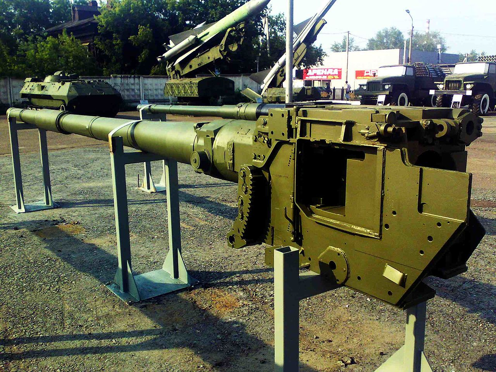
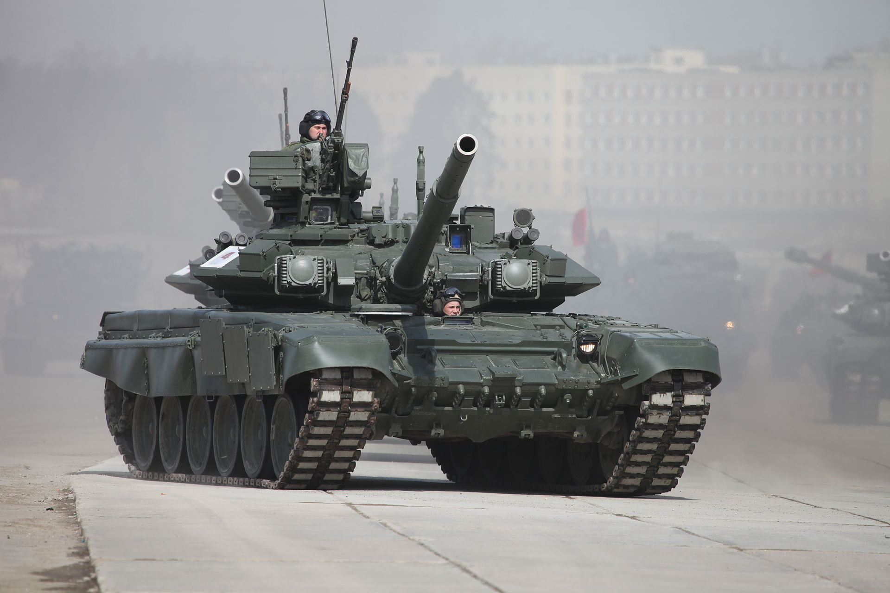

Т-90
Т-90 «Владимир» — российский основной боевой танк. После смерти главного конструктора танка Владимира Ивановича Поткина, решением Правительства Российской Федерации танку Т-90 было присвоено словесное название «Владимир». В период с 2001 по 2010 годы танк Т-90 стал самым продаваемым на мировом рынке новым основным танком. По состоянию на 2019 год стоимость нового Т-90 составляет 2,5-3,5 миллиона долларов, Т-90МС — 4,5 миллиона долларов. С конца 2011 года закупка танков Т-90 для Вооружённых Сил России была временно прекращена. С апреля 2020 года в Вооружённые Силы России были начаты поставки модернизированной версии Т90М.
История
Т-90 является глубокой модернизацией Т-72Б, созданного в нижнетагильском «УКБТМ» в 1989 году под руководством главного инженера Владимира Поткина (заводское название «Объект 188»). В 1989 году танк был передан на ГСИ, которые прошли успешно.
К разработке нового танка специалисты УКБТМ приступили согласно постановлению ЦК КПСС и Совета министров СССР № 741—208 от 19 июня 1986 года. Первые корпуса были изготовлены в апреле 1988 года. Конструкторы, по словам Владимира Поткина, вложили в неё полный опыт боевых испытаний и войсковой эксплуатации танков Т-72. «Объект 188» разрабатывался параллельно со значительно более совершенным экспериментальным танком «Объект 187», оба объекта проходили по программе доведения танка Т-72Б до уровня Т-80У\УД. Бронирование Т-72Б поздних серий (образца 1989 года) соответствовало данному уровню, а главным недостатком являлось отсутствие автоматизированной системы управления огнём. Очень простой и надёжный прицельный комплекс 1А40-1 уже не обеспечивал современных требований, предъявляемых к танкам. Для увеличения огневой мощи танка планировалось установить на него новую СУО. Решением стало установка комплекса управления огнём 1А45 «Иртыш», отработанного на танках Т-80У и Т-80УД. Его доработали для функционирования совместно с автоматом заряжания танка Т-72. Доработанный комплекс получил обозначение 1А45Т. Комплекс управляемого вооружения 9К119 «Рефлекс» позволил увеличить дальность огня до 5000 м по целям, движущимся со скоростью до 70 км/час. В отличие от Т-72Б «Объект 188» мог стрелять ракетой на ходу со скоростью до 30 км/час. Впервые в мире на машине был установлен комплекс оптико-электронного подавления ТШУ-1. Разработчики защиты пришли к выводу, что самый лучший способ отражения «умных» боеприпасов — вообще не допускать их попадания.
В январе 1989 года танк «Объект 188» был представлен на государственные испытания. В течение полугода они были опробованы в Московской, Кемеровской и Джамбульской областях, а также на полигоне Уралвагонзавода. Испытания показали высокую надёжность нового танка. 27 марта 1991 года совместным решением Министерства обороны и оборонной промышленности танк был рекомендован для принятия на вооружение Вооружённых Сил СССР под обозначением Т-72БУ. Развитие «Объекта 187» пришлось свернуть. Однако последующий период в жизни страны и выводы, сделанные по получении результатов боевого использования в операции «Буря в пустыне» танков типа Т-72, не дали возможности принять окончательное решение. К тому же, в декабре 1991 года перестал существовать Советский Союз.
Описание конструкции
Т-90 имеет классическую компоновку, с размещением отделения управления в лобовой части, боевого отделения — посередине и моторно-трансмиссионного отделения — в кормовой части. Экипаж Т-90 состоит из трёх человек — механика-водителя, размещающегося по продольной оси танка в отделении управления и наводчика с командиром, находящихся в башне слева и справа от орудия, соответственно.
Система управления огнём и прицельные приборы
Оснащается унифицированной с Т-80У системой управления огнём (СУО), а также ТВП 1-го поколения Буран-ПА. СУО танка Т-90 показала следующие возможности боевой стрельбы. Сильно бронированные цели на дальности до 5 км танк Т-90 поражает с ходу (до 30 км/ч) с большой вероятностью попадания первым выстрелом. За время государственных испытаний было произведено 24 пуска ракет на дальностях 4—5 км, и все они попали в цель (все пуски ракет производились неопытными бойцами), опытный наводчик за 54 секунды в движении на скорости 25 км/ч поразил снарядами 7 реальных бронированных целей, расположенных на дальностях 1500—2500. В сходных условиях Леопард 2 поразил на 1, а Абрамс на 2 цели меньше.
{kind=link}
Гладкоствольная пушка
{kind=link}
Основным вооружением Т-90А(СМ) является 125-мм гладкоствольная пушка 2А46М-5, размещённая в спаренной с пулемётом установке на цапфах в лобовой части башни и стабилизированная в двух плоскостях системой 2Э42-4 «Жасмин». Новое орудие 2А46М-5 сокращает рассеивание на 15 %. В отличие от 2А46М ствол: хромирован, оснащён эжектором, термозащитным кожухом и системой учёта теплового изгиба ствола пушки, позволяющей не выходя из танка проверить линию прицеливания[34]. Длина ствола орудия составляет 48 калибров. Пушка снабжена автоматом заряжания и способна вести огонь ПТУР. Автомат заряжания Т-90, размещённый на вращающемся полике башни — электромеханический, карусельного типа, аналогичный установленному на Т-72, но с системой управления в автоматическом режиме с места командира. Время заряжания выстрела АЗ одного типа 6,5 секунд, ПТУР — 8 секунд, время смены типа выстрела не более 12 сек. Полная перезарядка автомата заряжания составляет 13-15 минут..
Боекомплект пушки Т-90А (СА) состоит из 42 (43, 40 на других модификациях) выстрелов раздельно-гильзового заряжания, из которых 22 находятся в автомате заряжания, а ещё 20 — в укладках в корпусе и башне танка и могут быть вручную перемещены экипажем в автомат заряжания по мере расходования боеприпасов в нём, либо непосредственно заряжены в орудие. Т-90 способен вести огонь широким ассортиментом боеприпасов четырёх типов — бронебойными подкалиберными 3БМ42, 3БМ46 и 3БМ42М, 3БМ59, 3БМ60 для Т-90А с усовершенствованным АЗ. Кумулятивными ЗБК29М, 3БК31 осколочно-фугасными снарядами ЗОФ26 с системой дистанционного подрыва «Айнет», с электронным взрывателем 3ВМ-12, обеспечивающим подрыв ОФС в заданной точке траектории, это повышает эффективность ведения огня по зависающим вертолётам и живой силе в окопах, управляемыми ракетами, которые могут быть заложены в боекомплект в любом соотношении.
Комплекс управляемого вооружения
Помимо традиционного артиллерийского вооружения, Т-90 имеет возможность стрельбы ПТУР «Инвар-М». Пуск ракет осуществляется при помощи основного орудия танка, наведение ракет осуществляется по лазерному лучу в полуавтоматическом режиме. Комплекс управляемого вооружения Т-90 позволяет вести стрельбу, с вероятностью попадания, близкой к единице, по неподвижным или движущимся со скоростью до 70 км/ч целям на дистанции от 100 до 5000 м, с места и в движении со скоростью до 30 км/ч. Это обеспечивает ему намного большую эффективную дальность поражения цели, чем у танков, оснащённых только артиллерийским вооружением, для которых, даже при наиболее современных прицельных средствах, эффективная стрельба по целям типа «танк» на дистанции более 2500 м уже серьёзно затруднена.
Комплекс управляемого вооружения состоит из лазерного канала управления с баллистическим вычислителем, блока автоматики и выстрелов с управляемыми ракетами для танковой пушки. Выстрелы с управляемыми ракетами, марки 3УБК14 или 3УБК20, имеют те же габариты, что и стандартные 125-мм артиллерийские выстрелы и состоят из твердотопливной ракеты и уменьшенного метательного заряда, необходимого для придания начальной скорости ракете, а также обеспечения отката пушки и открытия её затвора после выстрела.
Вспомогательное вооружение
Вспомогательное вооружение Т-90 состоит из спаренного пулемёта, зенитной пулемётной установки и личного оружия экипажа. В спаренной с пушкой установке размещается 7,62-мм пулемёт ПКТМ. Боекомплект пулемёта состоит из 2000 патронов в восьми лентах по 250 штук, боевая скорострельность составляет около 250 выстрелов в минуту.
Зенитная пулемётная установка размещается на крыше башни на командирской башенке и представляет собой дистанционно наводимый автономный 12,7-мм пулемёт, НСВТ «Утёс» на танках первых выпусков или 6П49 «Корд» — на поздних машинах. Наведение пулемёта в горизонтальной и вертикальной плоскости осуществляется при помощи электромеханического привода. Боекомплект пулемёта составляет 300 патронов в двух лентах по 150 штук.
{kind=link}
Бронирование
{kind=link}
Т-90 имеет резко дифференцированную противоснарядную броневую защиту. Броневой корпус Т-90 — сварной, башня — литая на Т-90(С) и сварная на Т-90А (СА, АМ, СМ).
Основным материалом корпуса является броневая сталь; верхняя лобовая плита корпуса, а также лобовая часть башни в пределах курсовых углов ±35° состоят из комбинированной брони. Частично, многослойную конструкцию имеют также борта и крыша башни и бортовые бронеплиты корпуса. Башня Т-90А сварная, изготовлена из стальной брони средней твёрдости, которая на 10—15 % превосходит по противоснарядной стойкости литую броню средней твёрдости.
Форма броневого корпуса Т-90 и его компоновка не изменились по сравнению с Т-72, хотя защищённость нового танка и возросла по сравнению с предшественником за счёт применения более современной композитной брони и увеличения габаритов бронирования. Корпус Т-90 имеет коробчатую форму, с клиновидной носовой частью со стандартным для основных советских боевых танков углом наклона к вертикали верхней лобовой плиты 68°. Борта корпуса вертикальные, верхняя их часть состоит из броневых плит, нижняя же образована краями днища. Корма корпуса имеет обратный наклон. Крыша корпуса состоит из нескольких катаных броневых листов, днище корпуса же — цельноштампованное, сложной формы. Башня на Т-90А имеет лобовые детали, горизонтально отклонённые назад на 60°.
Наполнитель лобовых деталей корпуса и башни Т-90(С) аналогичен применяемому наполнителю на Т-72Б и состоит из пакетов наполнителя на основе блоков спецбронирования с отражающими листами, данный наполнитель относится к полуактивному типу.
Крыша башни частично закрыта ДЗ на всех модификациях.
Активная защита
Помимо традиционного бронирования и динамической защиты, Т-90 оборудован активной защитой, состоящей из комплекса оптико-электронного подавления «Штора-1». Комплекс предназначен для защиты от поражения танка противотанковыми управляемыми ракетами и состоит из станции оптико-электронного подавления и системы постановки завес. Станция оптико-электронного подавления предназначается для защиты от ракет с полуавтоматической системой наведения и состоит из двух инфракрасных прожекторов ОТШУ-1-7, двух модуляторов и пульта управления.
Система постановки завес предназначена для противодействия управляемым ракетам с лазерным самонаведением или полуавтоматическим наведением по лучу лазера, а также препятствования работе лазерных дальномеров и постановки дымовой (аэрозольной) завесы. Система состоит из комплекса индикаторов лазерного излучения, включающего в себя два датчика грубого и два — точного определения направления, системы управления и двенадцати пусковых установок аэрозольных гранат. При обнаружении облучения танка лазерным излучением, система постановки завес обеспечивает определение направления облучения и оповещение экипажа, после чего автоматически или по указанию командира танка производит отстрел аэрозольной гранаты, при разрыве создающей аэрозольное облако, ослабляющее и частично отражающее лазерное излучение, нарушая работу систем наведения ракеты. Помимо этого, аэрозольное облако маскирует танк, выполняя функции дымовой завесы и может применяться специально для этой цели.
Двигатель
Т-90 ранних модификаций оснащены четырёхтактным V-образным 12-цилиндровым многотопливным дизельным двигателем модели В-84МС жидкостного охлаждения с непосредственным впрыском топлива и приводным центробежным нагнетателем. В-84МС развивает максимальную мощность в 840 л. с. при 2000 об/мин.
На Т-90 поздних выпусков, Т-90А/С, устанавливается двигатель модели В-92С2, представляющий собой модернизированный В-84 и отличающийся от него установкой турбонагнетателя (2x) и улучшенной конструкцией, что позволило повысить развиваемую двигателем мощность до 1000 л. с. при 2000 об/мин.
{kind=link}
Трансмиссия
Коробки передач планетарные с гидроуправлением. Трансмиссия обеспечивает 7 передач вперёд и одну назад. Поворот машины осуществляется включением пониженной передачи в коробке передач со стороны отстающей гусеницы. Привод управления коробками передач гидравлический с механическим приводом золотников. Привод тормоза механический, но при этом обеспечивающий эффективное торможение и остановку машины, удержание её даже на крутых подъёмах и спусках.